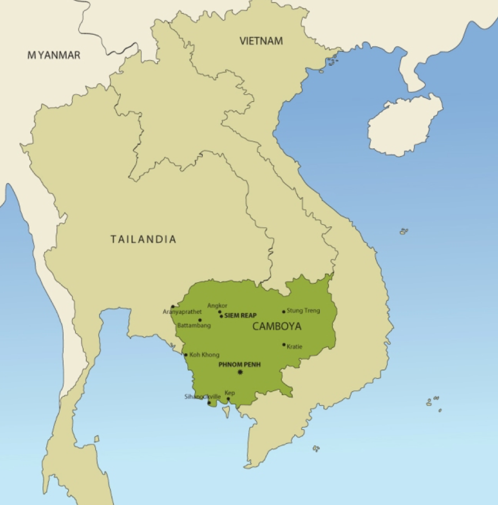
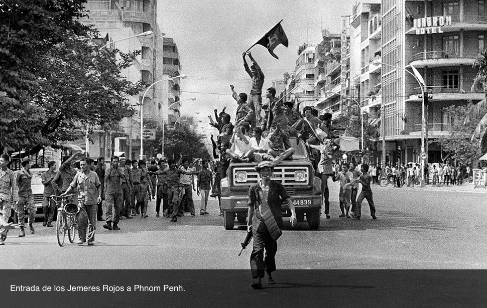
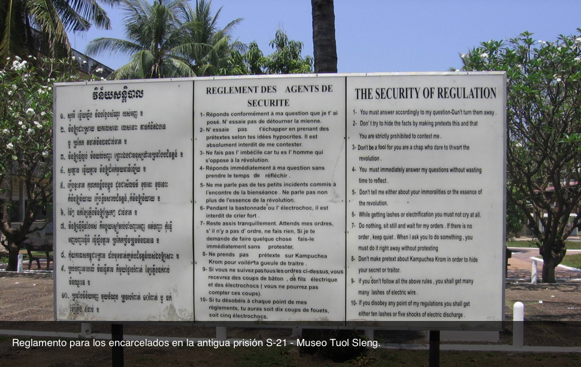

1975-1979
Camboya
Camboya, oficialmente denominado Reino de Camboya, es un Estado del sudeste asiático, ubicado en la península Indochina. Esa región -Indochina- ubicada entre India y China fue escenario del surgimiento de grandes reinos e imperios; entre ellos, uno de los más importantes fue el Imperio Jemer (siglos IX a XV). Los jemeres -tan conocidos a partir del genocidio- son uno de los grupos étnicos más antiguos del área.
Los reinos de Siam y Annam -que se transformaron en Tailandia y parte de Vietnam respectivamente- se repartieron el control del antiguo imperio hasta entrado el siglo XIX. Posteriormente, ya en 1884, fue Francia la que integró estas tierras a sus dominios coloniales, reorganizando el país para su explotación económica.
Luego de un breve dominio japonés durante la Segunda Guerra Mundial, Francia retomó el control entre 1946 y 1953, período en el que, a su vez, se desarrolló la Guerra de Indochina, que puso fin a ese dominio y que involucró a Vietnam, Laos y Camboya. En Vietnam, la resistencia estuvo conformada por nacionalistas de ideología comunista. Por lo que, producto de la Guerra Fría, el conflicto se internacionalizó rápidamente.
Luego de la Guerra de Indochina, la región de Vietnam fue dividida en Vietnam del Norte y Vietnam del Sur. La falta de respeto a los acuerdos generó la Guerra de Vietnam o Segunda Guerra de Indochina (1955-1975), con el apoyo de Estados Unidos para el Sur, buscando evitar la expansión comunista, y de China y la Unión Soviética para el Norte. Camboya optó por mantenerse neutral. Su estabilidad dependía de sus equilibrios entre la ayuda que recibía de Occidente, por un lado, y de parte del bloque comunista, por el otro. Igualmente, este conflicto, y sus derivaciones, tuvo una gran influencia sobre Camboya.

En 1965, Camboya comenzó a enfrentar importantes problemas fronterizos, tanto con Tailandia, que no aceptaba los límites del último período colonial, como con Vietnam del Sur, que inició persecuciones contra la minoría jemer que habitaba su territorio. Es en ese momento que el príncipe Norodom Sihanouk de Camboya se volcó decididamente hacia China y aceptó la instalación de bases del Frente Nacional de Liberación de Vietnam (Viet Cong) en sus fronteras, al norte. Mientras tanto, dentro de su frágil política de equilibrios, constituyó un gobierno de derecha pro estadounidense. En 1969, Estados Unidos inició los bombardeos sobre las posiciones del Viet Cong. Luego de 14 meses, y ante la imposibilidad de acabar con las bases comunistas rebeldes, EE.UU. sumó la invasión por tierra de terreno camboyano, junto con las fuerzas survietnamitas.
Un golpe de Estado afectó definitivamente a Camboya en 1970. El primer ministro, Lon Nol, tomó el control del país. Entre 1970 y 1975, Estados Unidos sostuvo su régimen con alrededor de 2.000.000.000 de dólares. Todo en función del apoyo a Vietnam del Sur. La mayor virtud del régimen golpista era su anticomunismo. Dentro de este panorama, comenzó a desarrollarse una brutal guerra civil en el país: por un lado, las fuerzas estadounidenses y Lon Nol; por el otro, los comunistas vietnamitas y un reducido grupo revolucionario, que creció rápidamente: el Jemer Rojo. Si bien estos revolucionarios iniciaron su accionar contra lo que consideraban la tiranía de Sihanouk y los privilegios de la realeza, la corrupción del régimen de Lon Nol generó una falsa “coalición” entre el príncipe Sihanouk -intentando retomar el gobierno- y los guerrilleros -buscando el apoyo de la población a través de la popularidad y prestigio de aquel-.
Entre marzo de 1969 y enero de 1973 -fecha del retiro de las fuerzas de Vietnam tras su derrota-, Estados Unidos arrojó 540.000 toneladas de bombas sobre suelo camboyano, asesinando a decenas de miles de civiles. A pesar de su salida física de la región, el gobierno norteamericano siguió sosteniendo financieramente a Lon Nol. El caos y la destrucción que se instalaron en Camboya sumó más de 1.000.000 de muertes. Ante esta ola de violencia, y sumando una gran crisis económica -hiperinflación, cosechas destruidas, hambre generalizada-, la población de Camboya comenzó a ver con buenos ojos la aparición del Jemer Rojo y su antiimperialismo.
Los líderes jemeres surgieron de tres movimientos que se opusieron a la ocupación francesa desde diferentes visiones: el Jemer Issarak (jemer libre), los nacionalistas y los comunistas. Buena parte de ellos se educaron en los colegios secundarios de Phnom Penh -la capital- a los que asistían los miembros de la clase alta camboyana y, posteriormente, en París. Allí se afiliaron al Partido Comunista Francés y crearon asociaciones de estudiantes jemeres, de donde surgieron varias de las ideas revolucionarias. De retorno en Camboya, se transformaron en políticos.
Aquellos estudiantes se dividieron entre Vietnam del Norte y Camboya, no sin resentimientos nacidos de su visión sobre los procesos revolucionarios. En 1960 había surgido, entre los jemeres comunistas de Camboya, el Partido de los Trabajadores de Kampuchea (Camboya era un nombre asociado al colonialismo; Kampuchea es en idioma jemer), que luego se transformó en el Partido Comunista de Kampuchea (1965). Saloth Sar, a quien luego se conoció como Pol Pot, lideró el movimiento. La mayoría de sus integrantes se integraron a la guerrilla, abandonando la capital. A comienzos de los años '60, el príncipe Sihanouk denominó a estos resistentes comunistas como “Jemeres Rojos”.
En las selvas del noreste, de grandes alturas, se desarrolló el movimiento que culminó cometiendo el genocidio. Manipularon a la población de aquellas zonas y comenzaron a reclutar fieles soldados a su causa; tan fieles como crueles. También en sus campos hicieron los ensayos de la sociedad que impusieron posteriormente. Su ejemplo fue la revolución china, pero intentaron ir más allá.
La población de las aldeas fue transportada a sus nuevos lugares de trabajo y residencia y los poblados fueron incendiados. Se inició así la creación de comunas a partir de sus principios radicales sobre la nueva sociedad a construir, castigando a todo aquel que discutiera sus directivas o intentara escapar. “Desaparecieron”, se decía. Con ellos, desaparecerían también las posesiones, la religión, la concepción de familia... La sociedad debía ser uniformizada.
Paralelamente, se separaron definitivamente de los comunistas de Vietnam, construyendo su propio modelo ideológico, basado en el marxismo-leninismo y en el maoísmo, pero de características únicas. Para 1974 ya controlaban el 85% del territorio de Camboya. El mundo se interesó por saber más de sus dirigentes. Sin embargo, resultó casi imposible. Ese misterio le dio a su poder una consideración que iba desde el respeto hasta el terror. Cuando el Jemer Rojo tomó Phnom Penh, el 17 de abril de 1975, la resignación era total, la resistencia mínima. Incluso, hubo quienes los recibieron en tono de fiesta.

La capital fue evacuada inmediatamente. Sus habitantes se vieron forzados a abandonarla a pie, sin miramientos. Incluso los hospitales fueron vaciados. La ciudad de 600.000 habitantes, contaba con 2.000.000 en ese momento producto de la guerra civil. Los automóviles se apilaron junto a televisores, heladeras y otros artefactos y se consumieron en grandes fogatas. Todos los centros urbanos importantes del país vivieron lo mismo. Las ciudades habían vivido a costa del campo, eran símbolos burgueses y de corrupción, decían.
La nueva sociedad sería agraria o no sería. Se debía volver a la tierra. Kampuchea debería abastecerse con sus propio recursos, basada en el arroz. Se necesitaban canales de agua para multiplicar los arrozales. La imagen del Imperio Jemer retornó con la idea de una vuelta al origen. Todo símbolo de la sociedad anterior, construida sobre bases capitalistas, debía desaparecer. Al igual que todos los individuos a los que se considerara “burgueses”, “enemigos de clase”.
A partir de ese momento, todos responderían al Angkar Loeu (“Organización en las alturas”), una especie de entidad superior, que todo lo sabía, que todo lo veía, pero que a su vez era cada uno de los individuos. El Angkar sería quien decidiera sobre la vida y la muerte de cada persona; sabía si mentían o no, si cumplían con la misión que tenían asignada o no. El Angkar no se equivocaba. Era el regulador de todos los aspectos de la vida, desde la prohibición de la propiedad privada y el rezo hasta la regulación de las relaciones sexuales entre las parejas, pasando por la imposibilidad de utilizar vestimenta de colores, conservar objetos provenientes de las ciudades, manifestar los sentimientos... Sus mandamientos se repetían a lo largo de toda la jornada de trabajo. Se separaba a los niños de sus padres a partir de los siete años y se los educaba sobre criterios estrictamente políticos. Ellos se transformaron en los soldados y policías del régimen. Espiarían, delatarían, y solo responderían al Angkar.
Las fuerzas del gobierno anterior -militares, funcionarios- fueron las primeras en ser castigadas, incluyendo a sus familias. Los extranjeros fueron expulsados -alguno, asesinado-. Las fronteras fueron cerradas, alambradas y minadas. Las embajadas, clausuradas en su mayoría. Todas las comunicaciones con el exterior se suspendieron.
En la nueva sociedad de esta Kampuchea liberada, no había lugar para la discrepancia. El rigor fue implacable. Algunos sujetos fueron considerados insalvables. Por su “contaminación” era imposible reeducarlos. Todos los que habían recibido educación eran potencialmente peligrosos; podían ser agentes del imperialismo o representantes de los valores burgueses por el solo hecho de haber leído. Maestros, intelectuales, profesionales, estudiantes, debían ser eliminados, “desaparecer”. Se llegó al extremo de asesinar a quienes utilizaban lentes ya que demostraban haber leído. El método habitual: un mazazo en la nuca; el pico y la azada también se convirtieron en armas. Las municiones se preservaban. El bosque escondía las ejecuciones y las pilas de cadáveres.
En las cooperativas de labor comunitaria, en las selvas desmalezadas para edificar las cabañas rudimentarias que habitaban, la gente trabajaba entre 15 y 18 horas al día, los siete días de la semana. Dos raciones de arroz era todo lo que recibían por alimento. La medicina y los cuidados fueron inexistentes. Así, la mayor parte del grupo nacional camboyano murió de hambre, agotamiento, y de las enfermedades que esto genera.
A ellos se le sumaron los grupos étnicos y religiosos que, al representar épocas pasadas y valores opuestos a la ideología jemer, tendieron a desaparecer: vietnamitas, chinos, monjes budistas, cham -jemeres musulmanes-, thais -tailandeses-. Junto a los seres humanos, desaparecieron las tradiciones del arte, la religión, la gastronomía; las pagodas -templos- fueron destruidas o convertidas en graneros.
Al pasar los años, surgieron los problemas internos en el movimiento Jemer. La idea de complot permanente, el temor y el terror con el que se vivía, la cultura del delator instalada, y la gran autoridad de los gobernante locales, hizo que comenzaran a acusarse entre sí y a destruirse a sí mismos. Se instaló la idea de “enemigo interior”. Miembros que pudieron ser vistos como traidores, desleales, sospechosos de intentar derrocar alguna jerarquía, o que simplemente cuestionaron alguna orden, fueron internados en centros de tortura y muerte. El modelo fue la cárcel de Tuol Sleng -conocida como S-21 por su nombre en código-, una antigua escuela de Phnom Penh en la que se obtuvieron “confesiones” bajo cualquier forma de tortura para luego ejecutar a las víctimas.
En 1977, los primeros dirigentes desertores comenzaron a relatar el horror. Pol Pot apareció fotografiado por primera vez también ese año, intentando dar otra imagen pública de Kampuchea Democrática -nuevo nombre del Estado-. Fue la primera vez que se asumió que el Angkar era el secretariado político del Comité Central del Partido Comunista local. La idea de perder el poder no los conformaba.
Sus enemigos, además de los “imperialistas” y “fascistas”, pasaron a ser también los “revisionistas” comunistas y los “hegemonistas”, como denominaban a la Unión Soviética. Su mayor respaldo siguió siendo China. En 1977 iniciaron incursiones en territorio vietnamita, lo que se sumó a la guerra de propaganda entre los dos Estados comunistas, que rompieron relaciones. Vietnam respondió invadiendo Camboya, unido a los desertores jemeres fundadores del Frente de Unión Nacional para la Salvación de Kampuchea. La Unión Soviética respaldó la invasión.
El régimen del Jemer Rojo fue derrotado rápidamente y Phnom Penh cayó el 7 de enero de 1979. La magnitud de los crímenes salió a luz. La sociedad agraria promovida por los antiguos rebeldes costó la vida de alrededor de 2.000.000 de personas. Se hallaron miles de documentos acusatorios y se revelaron los campos de trabajo y las fosas comunes.
Muchos jemeres continuaron incorporados a las estructuras del Estado hasta su muerte, evitando ser juzgados a través de diversos mecanismos: algunos formando parte del nuevo gobierno vietnamita, otros combatiendo desde los campamentos instalados en Tailandia, o en colaboración con el propio príncipe Sihanouk. Los juegos de poder entre las potencias y el miedo de países limítrofes de que se expandieran lo hicieron posible, colaborando hasta en su reagrupamiento y armándolos. Incluso EE.UU. los apoyó en su búsqueda de retomar relaciones con China. La discusión no se centró en el genocidio y sus consecuencias, sino en la invasión vietnamita. La disputa entre chinos y soviéticos se llevó adelante a través de terceros. La población camboyana continuó siendo la víctima.
Recién en 1985, la Subcomisión para la Prevención de la Discriminación y Protección de las Minorías de la ONU documentó los crímenes y aprobó el uso del término “genocidio”. Sin embargo, nada cambió en cuanto al juicio a los responsables. Recién cuando la Unión Soviética y China se acercaron y la Guerra Fría perdió fuerza, el apoyo a los bandos instalados en Cambya se detuvo. Los acuerdos de París de 1991 promovieron la salida de las tropas vietnamitas y la instalación de un nuevo gobierno presidido por Norodom Sihanouk y con la participación de Khieu Samphan -Jefe del Estado Jemer Rojo, cara visible del régimen en sus primeros años-. Con los genocidas controlando el 15% del territorio, sin entregar las armas, o directamente en el gobierno, se negoció no utilizar la palabra “genocidio”. También se les permitió participar en las elecciones de 1993.

No fue sino hasta 1997, luego de derrotar al Jemer Rojo, que el primer ministro Hun Sen propuso la creación de una corte internacional. Sin embargo, impidió que tuviese la misma estructura que las de Ruanda o la ex Yugoslavia. La independencia jurídica no le interesaba. Él era un ex Jemer Rojo y, además, desconfiaba de la ONU que, durante los años '80, había apoyado a sus antiguos camaradas. Las negociaciones resultaron en que el tribunal fuera mixto, camboyano-internacional; que su sede tampoco estuviera ubicada en el exterior, sino en la propia Camboya; que el número y la calidad de los imputados estuviera limitada; y que los jueces y fiscales fueran locales en su mayoría.
Algunos de los escasos jefes jemeres arrestados han muerto en prisión sin condena. Una de las pocas sentencias que se conocen es la de Kang Keck Ieu, alias Duch, el antiguo docente que dirigió la prisión de Tuol Sleng u Oficina S-21. El arresto de Duch, que se había producido en 1999, fue oficializado por el Tribunal para el genocidio camboyano recién en 2009. Fue el primer juicio abierto contra uno de los líderes del régimen. Se lo condenó a 35 años de prisión en primera instancia. Luego de una apelación, su condena fue revisada y, en 2012, se extendió a cadena perpetua.
Por su parte, Nuon Chea -uno de los ideólogos del régimen, el llamado “Hermano Número Dos”- y Khieu Samphan -el ex Jefe de Estado- también fueron condenados a cadena perpetua por crímenes contra la humanidad en 2014. Ambos insistieron en su inocencia. En 2016, su proceso por el delito de genocidio aun continuaba.
Saloth Sar, quien sería conocido luego como Pol Pot -“Hermano Número Uno”-, el máximo líder que conoció el movimiento, falleció en 1998, por lo que nunca fue juzgado más que por sus propios compañeros, un año antes, por crímenes cometidos al interior de la organización luego de 1979. Se hallaba prisionero de los mismos Jemeres Rojos.